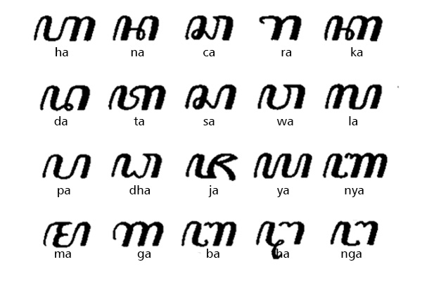
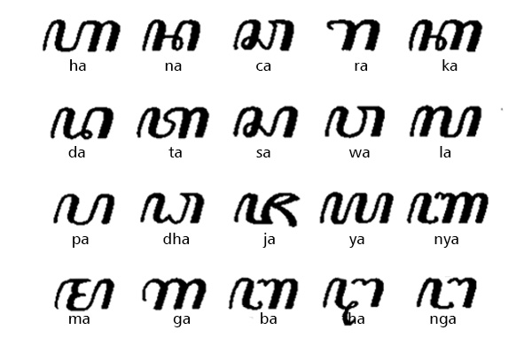

Aksara Batak
Aksara Batak atau yang dikenal dengan nama Surat Batak adalah aksara yang
digunakan untuk
menuliskan
bahasa-bahasa Batak, yaitu bahasa Angkola-Mandailing, Karo, Pakpak-Dairi, Simalungun, dan
Toba.
Aksara ini
memiliki beberapa varian bentuk, tergantung bahasa dan wilayah. Secara garis besar,
ada lima
varian
Surat
Batak di Sumatra, yaitu Angkola-Mandailing, Karo, Pakpak-Dairi, Simalungun, dan Toba.
Aksara ini
wajib
diketahui oleh para datu, yaitu orang yang dihormati oleh masyarakat Batak karena
menguasai ilmu
sihir,
ramal, dan penanggalan. Kini, Surat Batak masih dapat ditemui dalam berbagai pustaha, yaitu
kitab
tradisional masyarakat Batak.
 
